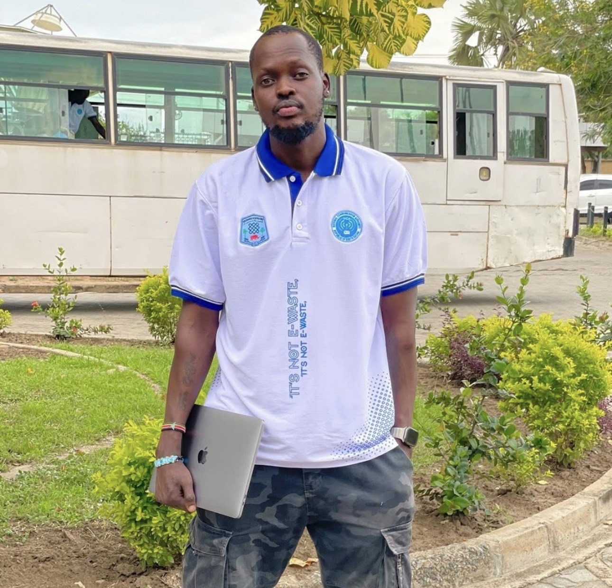

Freelancer | Web Developer | Information Technologist | Network Enthusiast

Welcome to my personal portfolio. I am an Information Technologist and aspiring Web Developer with a passion for building practical technology solutions. This website therefore showcases education, technical skills and projects as I continue to grow in the field of Information Technology. To know more about me, my professional and technical work, explore through the links above.